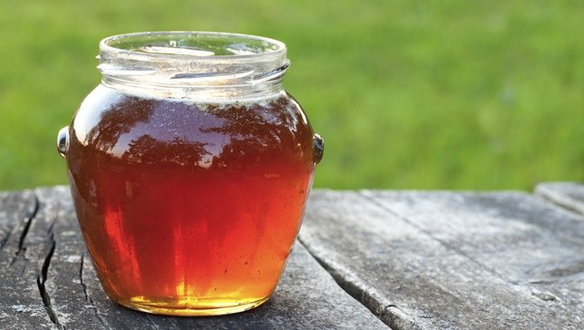

Darker honey, more antioxidants? What the research says
Honey is more than sugar and sunshine. It carries small amounts of natural plant compounds that researchers have been studying for years — and the color of the honey in your jar offers a clue to how much is there.

First, what are antioxidants?
Your body is constantly producing unstable molecules called free radicals. They're a normal part of life, but when they build up faster than the body can handle them, the result is called oxidative stress, which can damage cells over time. Antioxidants are compounds that help keep free radicals in check. Our bodies make some, and we get others from foods like fruits, vegetables, tea — and honey.
What's in honey?
Honey is mostly sugar and water. Natural sugars make up roughly 80 to 85 percent of it. The small remainder is where things get interesting: enzymes, minerals, amino acids, and a family of plant compounds called polyphenols. The two main groups of polyphenols in honey are flavonoids and phenolic acids. Bees gather these from the nectar and pollen of the plants they visit, so every honey's mix depends on what was blooming.
Does color really matter?
Researchers at the University of Illinois tested honeys from seven different floral sources and found that the darkest ones, such as buckwheat honey, had the highest antioxidant scores. The more phenolic compounds a honey contained, the higher it scored. Polyphenols and minerals are a big part of what gives honey its color in the first place.
The gap can be large. In earlier University of Illinois research, dark buckwheat honey showed about 20 times the antioxidant activity of a very light California sage honey.
Color is a good rule of thumb, but it isn't a guarantee. That earlier research also turned up a light sweet-clover honey that was rich in antioxidants and a darker mesquite honey that had relatively few. The flowers matter as much as the shade.
Do those antioxidants actually reach your body?
Lab results only go so far, so researchers also tested people. Two small studies published in 2003 looked at healthy adults who ate buckwheat honey:
- In one, 25 men drank buckwheat honey stirred into water. Their blood's antioxidant capacity rose by about 7 percent, while plain water, plain tea, and tea with sugar showed no significant change.
- In the other, adults ate either buckwheat honey or corn syrup. After the honey, the level of phenolic compounds in their blood went up, and so did its antioxidant capacity.
These were short, small studies that measured blood levels for a few hours. The researchers themselves noted that long-term studies are needed to know whether eating honey regularly leads to lasting health benefits.
What about inflammation?
Inflammation is the body's natural response to injury or infection, but long-lasting inflammation is linked to many chronic health problems. Scientists are interested in honey because its flavonoids, phenolic acids, and other components have shown anti-inflammatory effects in laboratory and animal studies.
Reviews of this research call it promising. But most of the evidence so far comes from the lab rather than from people eating honey in everyday amounts, so it's too early to say honey lowers inflammation in the body.
About South Louisiana honey
Our bees forage the wildflowers and woodlands of South Louisiana, and the honey they make tends toward the darker, more robust end of the spectrum, with a deep color and bold flavor. Like any wildflower honey, its exact makeup shifts from harvest to harvest with whatever is blooming. We haven't had our honey lab-tested for antioxidants, so we'll let the research speak for honey in general — and let the flavor speak for itself.
Keep it in perspective
- Honey is still a sugar. Any benefit comes from using honey in place of other sweeteners, not from adding more sweetness to your day.
- Watching your blood sugar? If you have diabetes or prediabetes, talk with your doctor about how honey fits into your diet.
- No honey for babies under 12 months. Honey can carry spores that cause infant botulism, a rare but serious illness.
- Fruits and vegetables come first. Honey's antioxidants are a nice bonus, not a substitute for a varied, plant-rich diet.
The bottom line
Honey's natural plant compounds are real, and darker honeys usually carry more of them. That's one more reason many people choose a robust, local honey over refined sugar. Just enjoy it for what it is — a wholesome, flavorful sweetener — not a health treatment.
This article is for general information only. It isn't medical advice and isn't meant to diagnose, treat, or prevent any disease. Talk with your doctor about any health concern or before making changes to your diet.
Sources
- Gheldof N, Engeseth NJ. Antioxidant capacity of honeys from various floral sources based on the determination of oxygen radical absorbance capacity and inhibition of in vitro lipoprotein oxidation in human serum samples. J Agric Food Chem. 2002;50(10):3050–3055. doi.org/10.1021/jf0114637
- Gheldof N, Wang XH, Engeseth NJ. Identification and quantification of antioxidant components of honeys from various floral sources. J Agric Food Chem. 2002;50(21):5870–5877. doi.org/10.1021/jf0256135
- Gheldof N, Wang XH, Engeseth NJ. Buckwheat honey increases serum antioxidant capacity in humans. J Agric Food Chem. 2003;51(5):1500–1505.
- Schramm DD, et al. Honey with high levels of antioxidants can provide protection to healthy human subjects. J Agric Food Chem. 2003;51(6):1732–1735. (One author was affiliated with the National Honey Board.) doi.org/10.1021/jf025928k
- Raloff J. The color of honey. Science News, September 12, 1998 (reporting on earlier University of Illinois honey research).
- Palma-Morales M, Huertas JR, Rodríguez-Pérez C. A comprehensive review of the effect of honey on human health. Nutrients 2023;15(13):3056. doi.org/10.3390/nu15133056
- Cianciosi D, et al. Phenolic compounds in honey and their associated health benefits: a review. Molecules 2018;23(9):2322. doi.org/10.3390/molecules23092322
- Ranneh Y, et al. Honey and its nutritional and anti-inflammatory value. BMC Complement Med Ther. 2021;21:30. doi.org/10.1186/s12906-020-03170-5
Taste the difference
Raw, unaltered wildflower honey from Acadiana hives.
More from Good to Know: A spoonful for a cough: what the research says about honey →